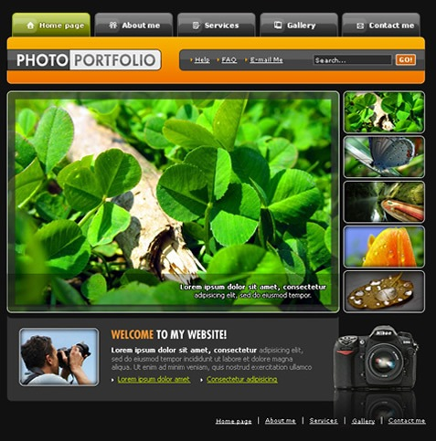
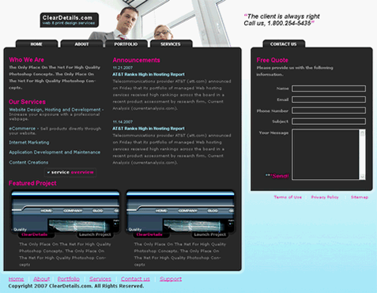
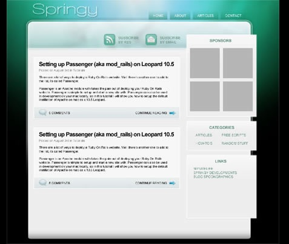
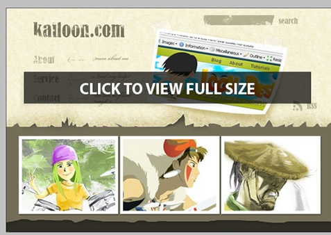
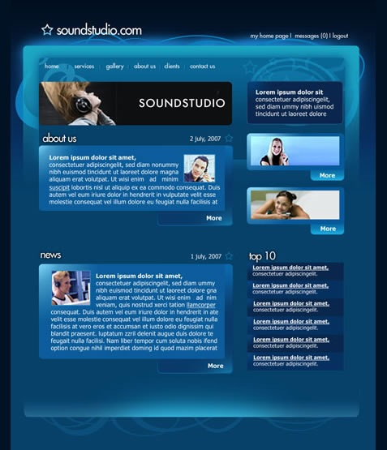
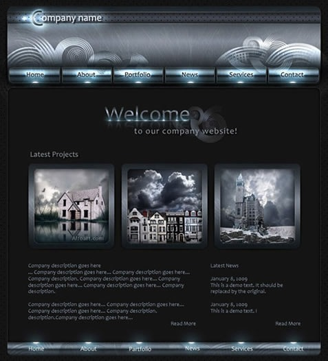

下面是35个非常不错的UI设计的的教程及效果图，非常不错哦。不但教你如何做一些特效，同样教你如何做UI布局和界面设计。当然，他们风格迥异，也基本上都是Web页面上的。都非常不错。希望你喜欢。（点击下面的图片可以打开相关的教程）
Professional Modern Web Layout
Photography portfolio Design

Professional header design for your website
Glossy-Style Carbon Fibre Navigation Buttons

Photoshop Paper Texture from Scratch then Create a Grungy Web Design with it!

Volkswagen Inspired Navigation

Royal Interface – Design Tutorial

How to Create a Simple & Sleek Web 2.0 Site Footer

How to Create a Grunge Web Design in Photoshop

Design a Professional Design Studio Web Template in Adobe Photoshop

Corporate WordPress Style Layout

Create a Vibrant Modern Blog Design in Photoshop

Design a Simple Rounded Content Box in Photoshop

Design a Cartoon Grunge Web site Layout

Design a Unique Grungy Website Layout

Creating A Glossy Navigation Bar

Making the ‘Clean Grunge’ Blog Design Photoshop tutorial

Sound System Studio Web Layout Photoshop tutorial

Platinum Shiny, Glossy and Slick Web Design Photoshop tutorial

Design Studio Layout – Photoshop Tutorial

How To Draw The Billings Application Icon
Clean Vertical Navigation Interface in Photoshop

Creating A Professional Magazine Web Layout

Design Agency Layout Photoshop tutorial

Modern Web Search Bar Photoshop tutorial
Design a Professional Design Studio Web Template in Adobe Photoshop

Create a Professional Gaming Header Photoshop tutorial

Carbon Fiber Layout Photoshop tutorial

也欢迎你和大家分享这里没有列出来的。
文章：来源
（转载本站文章请注明作者和出处 酷 壳 – CoolShell ，请勿用于任何商业用途）